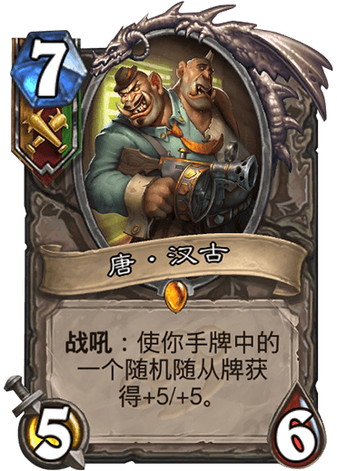

唐·汉古
作为污手党家族的主心骨，汉有时候真想把愚钝的古扫地出门，但他没法这么做。
“要么加入污手党！要么滚出加基森！”
燃鬃·自走炮
燃鬃在污手党混迹多年，一直得不到重用。其中最主要的原因就是他开炮的速度太慢了，经常错过最佳时机。后来他把自己的胡子点着了，顺利得到了晋升。
“啊哈哈哈哈！火力全开！”
霍巴特·钩锤
霍巴特就是那个发明了全自动食人鱼发射器的家伙…瞧他那洋洋自得的样子！
“机械小鸡准备就绪！”
金手指卡努克
在龙蛇混杂的加基森没点装备怎么行？作为污手党的头号打手，卡努克正是凭借这一对指虎为其赢得了“金手指”的名号。
“哦吼！哦吼！”